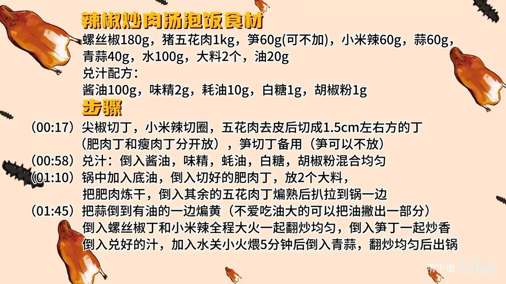

辣椒炒肉汤泡饭
隋卞一做。180g 螺丝椒配 1kg 五花肉，肉去皮切 1.5cm 见方的丁，肥瘦分开：肥肉丁先下锅放 2 个大料炼干，再下瘦肉丁。兑汁用 100g 酱油、10g 蚝油、2g 味精、1g 白糖、1g 胡椒粉，加水小火煨 5 分钟，最后下青蒜。
原视频：https://www.bilibili.com/video/BV1ND421n7Rv
食材
猪五花肉、螺丝椒 等 14 样
| 类别 | 用料 | 用量 |
|---|---|---|
| 主料 | 猪五花肉 | 1kg |
| 主料 | 螺丝椒 | 180g |
| 配料 | 小米辣 | 60g |
| 配料 | 蒜 | 60g |
| 配料 | 青蒜 | 40g |
| 配料 | 笋 | 60g（可不加） |
| 配料 | 大料 | 2个 |
| 配料 | 水 | 100g |
| 调料 | 油 | 20g |
| 调料 | 酱油 | 100g |
| 调料 | 味精 | 2g |
| 调料 | 蚝油 | 10g |
| 调料 | 白糖 | 1g |
| 调料 | 胡椒粉 | 1g |
步骤
- 切配：螺丝椒切丁，小米辣切圈，五花肉去皮后切成 1.5cm 左右见方的丁（肥肉丁和瘦肉丁分开放），笋切丁备用（笋可以不放）。
- 兑汁：倒入 100g 酱油、2g 味精、10g 蚝油、1g 白糖、1g 胡椒粉，混合均匀备用。
- 煸肉：锅中加入 20g 底油，倒入切好的肥肉丁，放 2 个大料，把肥肉炼干；再倒入其余的瘦肉丁煸熟，扒拉到锅一边。
- 炒辣椒：把蒜倒到有油的一边煸黄（不爱吃油大的可以把油撇出一部分），倒入螺丝椒丁和小米辣，全程大火一起翻炒均匀，再倒入笋丁一起炒香。
- 调味收汁：倒入兑好的汁，加入 100g 水，关小火煨 5 分钟，之后倒入青蒜，翻炒均匀即可出锅。
讲解要点
难度：★★☆☆☆（新手可做，难点是把肥肉炼干、辣椒不出水）
为什么这么做
- 肥瘦分开下锅，肥肉先炼干：肥肉炼出的猪油是这道菜的香气基础；一起下锅，瘦肉出水变柴，也炼不出油。
- 炼肥肉时扔料、别老扒拉：大料在油里释放香气，给猪油一个底香；不停翻动温度上不去、出油慢。
- 肉煸熟后扒到一边，用油把蒜炸黄：蒜炸到金黄香气最足，后面焖五分钟也不会剩生辣味。
- 辣椒全程大火炒：高温快炒让辣椒断生又保持脆、出水少，汤才不寡。
- 一锅到底不换锅：辣椒、蒜、肉、汁的味道在同一口锅里融在一起，汤里既有肉香又有辣椒香。
- 兑汁后少加水、小火焖五分钟：味才能渗进肉里，肉更柔；水少，汤才够浓，正好泡饭。
- 青蒜最后下：青蒜久焖会黄、香气跑光，出锅前下既提香又保脆。
容易翻车
- 肥肉没炼干就下瘦肉，锅里水汽大，肉煸不香、发柴。
- 辣椒炒出水，汤泡饭就寡淡，饭泡进去只剩水味。
- 水加多、焖过头，辣椒软塌，汤汁稀得挂不住饭。
- 小米辣下手太重，辣到吃不消；不能吃辣就减量或换二荆条。
热评补充
- 有人照谱做完爆辣到肠胃不适，小米辣的量按自己能吃辣的程度来，别硬跟。
原片尾卡

原片文案
AI 字幕校准稿
辣椒炒肉很下饭，汤也很下饭，辣椒炒肉汤泡饭，你应该怎么应对？这个辣椒是小李点的外卖，吃完之后非得让我给他复刻，我为小李付出的人太多了。
五花肉去皮，瘦一点的留着放一块，肥一点的留着放一块。先兑一个汁：酱油、味精、蚝油、白糖、胡椒粉，所有比例不用记，会给我们放到片尾。
然后把锅烧热，加点油润一下锅，倒入肥肉丁，里边搁俩大料，跟炼油似的，把肥肉给它炼干。不用老扒拉它。看刚才多大的肉丁，现在已经变得小了一半多，这时候我们把剩余的肉全倒下去。
肥瘦肉煸熟了，咱们把它搬到一边去，把蒜倒进去，用这个油把蒜炸香。你们要不爱吃油大，可以把多余的油撇出点。把里边的蒜都黄了，把辣椒倒进去，小米辣一起翻炒，全程大火；笋放进去增加一点口感——这个不重要，家里边有什么放什么。
这样一锅炒有个好处，辣椒、蒜、肉、汤这几个的味道会很融合。然后我们放入兑好的汁，来定一下味，里边少加点水，然后关小火焖 5 分钟就行。这样肉的所有味道更柔和一点，味全渗到肉里面去。好，到时间了，把青蒜倒进去，出锅。
绝中绝，咸香辣，好好吃。肉非常有口感，非常香，你偶尔吃到那个猪油渣，还稍微有点脆脆的，所以它的口感非常好，还非常奇特、很多元。还有咱这个比一般小炒肉的汤要更多，更适合拌饭；猪油又让这个米饭变得油润。